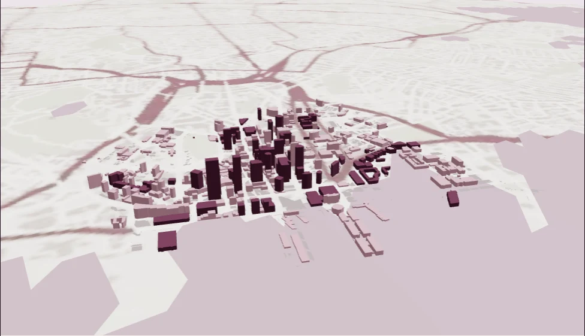

Tāmaki Makaurau · terrain you can turn
Auckland, in three dimensions.
Explore real city-centre footprints, sourced height tags and the land beneath them.

Loading the terrain…
Drag to turn · pinch or scroll to zoom · camera starts looking inland from the harbour
A model with its sources attached.
Terrain: Toitū Te Whenua LINZ, CC BY 4.0. Bare-earth elevations in NZVD2016, from the existing Auckland sample asset, returned to ×1 vertical scale in this browser view. This mesh further resamples to approximately 112 m; it is not raw LiDAR or survey-grade detail. This browser view adds simplified OSM building extrusions, not detailed roof or facade models.
Mapped coastline, parks, streets and footprints: © OpenStreetMap contributors / OpenMapTiles via OpenFreeMap, ODbL 1.0. The fixed source extract may contain omissions or date differences. Water is a visual background, not bathymetry. Nothing here predicts floods, hazards or safe routes.
City source data & limits · 2D atlas · City AR scale and crop · Terrain provenance · Map sources · ODbL
Terrain derivative attribution: Copyright in the underlying dataset from which this work has been derived is owned by Regional Software Holdings Ltd (RSHL).